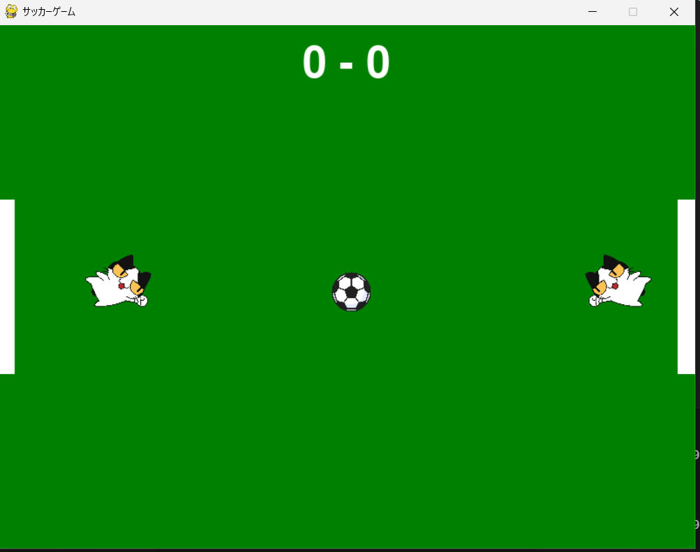
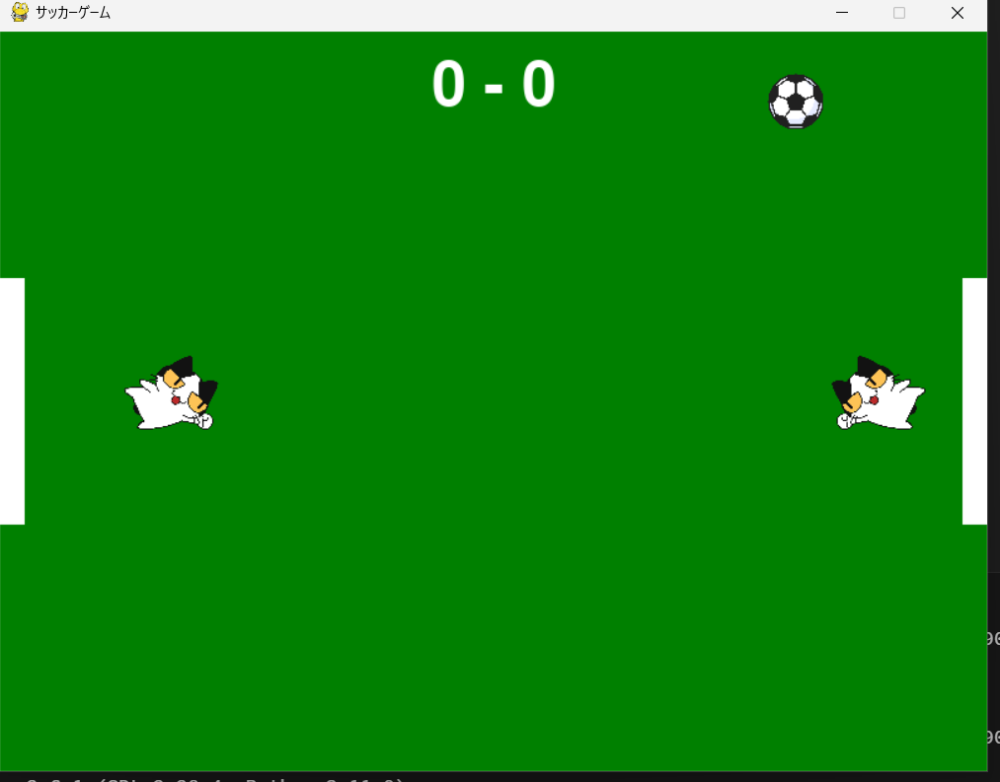
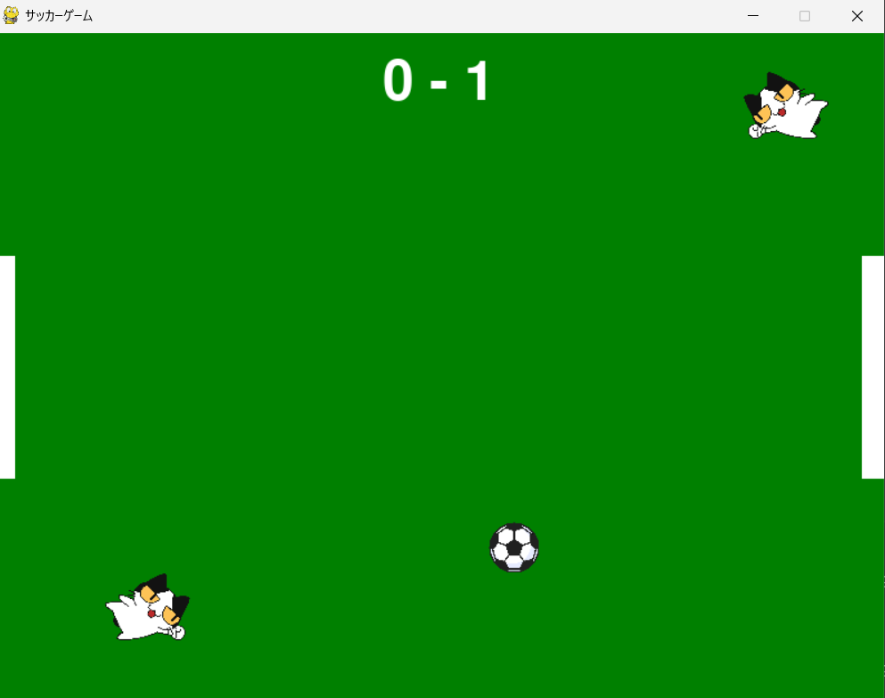
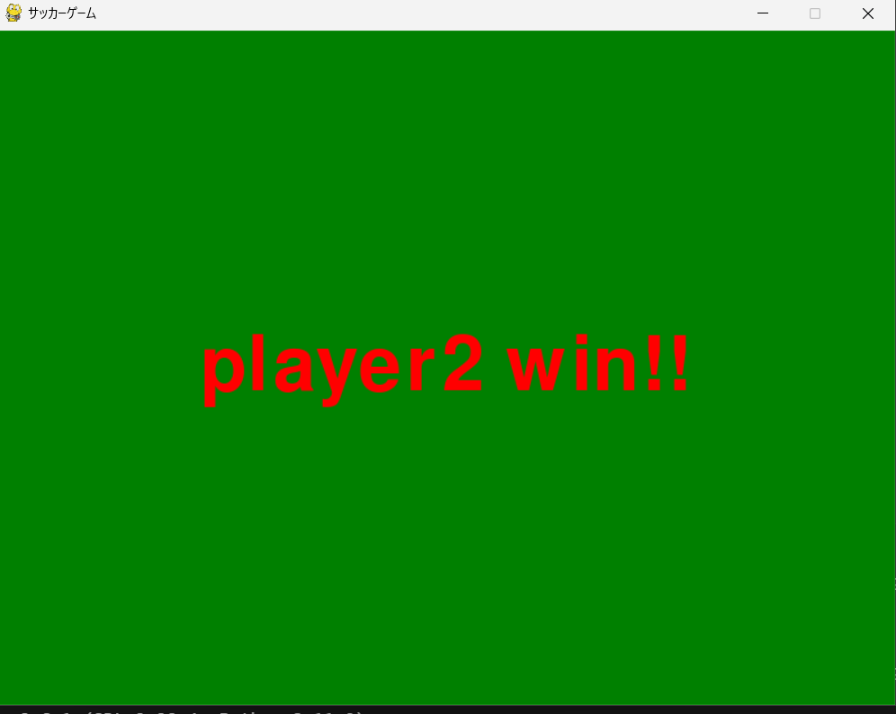

ようこそ！こちらは私のポートフォリオサイトです。
名前は鳥谷尾晃暉といいます。以下から箇条書きで簡単な私の情報を提示させていただきます。
2Iのクラス総代を務めています。
プログラミング授業の自由課題で作成したじゃんけんゲーム (ボタンをクリックしてご覧ください)
このプログラムの概要
これはコンピュータとじゃんけんをし、勝つと1ポイント加算されますこれはコンピュータとじゃんけんをし、勝つと1ポイント加算されもう一度、あいこだとじゃんけんが終了、負けると-1ポイント加算されもう一度プレイできるプログラムです。はじめにプレイやーのポイントを0からスタートしています。choiceでコンピュータとプレイヤーが選ぶことのできるじゃんけんの選択肢をリスト化しています。def jadgeでプレイヤーとコンピュータの選択を受け取り、結果を返します。この時 ・あいこ：両者の選択肢が同じ場合 ・勝ち：プレイヤーが勝つ選択肢の時 ・負け：プレイヤーが負ける選択肢の時 と定義しています。while points < 3 でプレイヤーのポイントが3未満の間はゲームを続けるようにしています。breakであいこになった場合はゲームを強制的に終了させるようにしています。プレイヤーのポイントが3になったとき、google colabで一筆書きの星が書かれるようにしています。最後に、ゲームオーバーになるのはあいこになったときだけなので、あいこになると「ゲームオーバーです。もう一度挑戦してください。」と表示されるようにしました。
私たちのグループはUnityを使用し、簡易的なゲームを作成しました。私はこのゲームの内容、ルール説明を書きました。
サッカーゲームを作成しました。以下にプレイ内容の画像を４枚搭載させていただきます。
ゲームスタート時の画像
ボールが動いているのを確認できる画像
キャラクターが動き、点数が入ることを確認できる画像
どちらかが5点入れたら画面に○○win!!とでてきてゲームが終わるのを確認できる画像
概要
上記の画像にもある通り、これは猫と猫が戦うサッカーゲームです。
左側がplayer1、右側がplayer2です。
ルールはボールが移動するので猫をボールに向かって上下に移動させ、猫にボールを当てます。するとボールが跳ね返り対戦相手の猫の方に移動するので跳ね返しあって戦います。
Rキーを押すことでバグが起きた時などにリセットできます。もしボールがゴール横に出たらボールが再び中央に戻りリスタートされます。
このゲームはどちらかが５点先取することで画面が最後の画像のように切り替わりゲームが終了します。
①player1はWキーで上に、Sキーで下に移動できます。
②player2は↑キーで上に、↓キーで下に移動できます。
このゲームはplayerにボールがあたるか壁にボールがあたると徐々にボールが速くなっていきます。
制作時期2024年12月～2025年1月 (コマンドはボタンをクリックしてご覧ください)
Python, Git/GitHub, VSCode - 学校の授業で使用しています。
Arduino - 2Iの前期科目にて使用していました。
Scratch - 小学校、中学校で使用経験あり。
Ambient, Real VNC - 実験実習にて使用、Raspberry Piの遠隔操作にも使用しています。